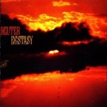
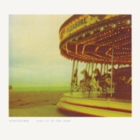
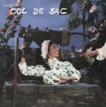
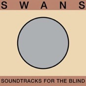
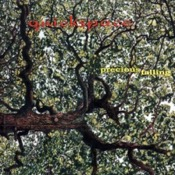
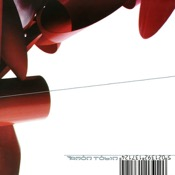
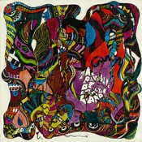

Catalogue de recommandations musicales. Après avoir commencé à découvrir la musique en écoutant du rock progressif, j'ai été marqué par l'écoute des groupes krautrock (Can, NEU!, Faust, Popol Vuh), qui m'a ouvert les portes de la musique expérimentale. Mes goûts ont ensuite glissé vers des sonorités de plus en plus épurées, tout en gardant une empreinte électronique forte. Ainsi, l'ambient, le minimalisme et la musique électronique progressive semblent aujourd'hui constituer une part importante de mes affinités musicales. Au gré de mes écoutes, j'ai progressivement délaissé les productions musicales centrées sur les paroles. Ces recommandations concernant essentiellement la musique rock ou issue du rock, il y aura très peu de jazz, de blues ou même de hip hop puisqu'il faudrait réaliser le même travail de sélection pour ces genres musicaux.
Les deux premières listes correspondent à ce que j'écoute actuellement. Les albums qui y figurent ne seront pas présents dans les listes suivantes, propres à chaque décennie, dans le but d'éviter toute redondance. Cette liste entend proposer des recommandations musicales par album, à raison d'un album par artiste ou par groupe.
Cette page HTML s'inspire allègrement de celle proposée par Lamuya et accessible ici → http://zimina.net/ambient/
Merci de m'avoir permis de réutiliser cet affichage pour construire ma propre bibliothèque !
Les deux premières listes correspondent à ce que j'écoute actuellement. Les albums qui y figurent ne seront pas présents dans les listes suivantes, propres à chaque décennie, dans le but d'éviter toute redondance. Cette liste entend proposer des recommandations musicales par album, à raison d'un album par artiste ou par groupe.
Cette page HTML s'inspire allègrement de celle proposée par Lamuya et accessible ici → http://zimina.net/ambient/
Merci de m'avoir permis de réutiliser cet affichage pour construire ma propre bibliothèque !
Ambient & New Age⇡
|
Steve Roach Structures From Silence (1984) |

Altus 24 Hours (2001) |
Brian Eno Ambient 1: Music for Airports (1978) |
 Deuter Ecstasy (1979) |

Global Communication 76:14 (1994) |
||
|
Vangelis Papathanassiou L'Apocalypse des animaux (1973) |
Tangerine Dream Zeit (1972) |

Thom Brennan Mist (2000) |

Popol Vuh In den Gärten Pharaos (1971) |
Iasos Angelic Music (1978) |
||

Dedekind Cut Tahoe (2018) |
Michael Stearns Planetary Unfolding (1981) |

David Casper Crystal Waves (1984) |

Syntonic Research, Inc. Environments – Disc 2 (1970) |
Don Slepian The Sea of Bliss (1980) |
Minimalisme⇡

Erik Satie (par Pascal Rogé) 3 Gymnopédies & Other Piano Works (1984) |

Arvo Pärt Tabula Rasa (1984) |
Jordan de la Sierra Gymnosphere: Song of the Rose (1977) |

Murcof x Wagner Statea (2016) |
Steve Reich Music for 18 Musicians (1978) |
||

Brambles Charcoal (2012) |
Insides Clear Skin (1994) |
Into the Well From the Mouth of the Sun (2015) |

Max Richter Memoryhouse (2002) |

Philip Glass Solo Piano (1989) |
||
|
Various Artists Piano Cloud Series – Volume Two (2016) |
Blaine L. Reininger & Steven Brown 1890 - 1990: One Hundred Years of Music (1990) |
Arvo Pärt (par Paavo Järvi et l'Estonian National Symphony Orchestra) Summa (2002) |
The Necks Unfold (2017) |

Urban Sax Urban Sax (1977) |
||

Michael Nyman The Essential Michael Nyman Band (1992) |
Lubomyr Melnyk Fallen Trees (2018) |

Wim Mertens The Belly of an Architect (1987) |
Harold Budd The Pavilion of Dreams (1978) |
Années 2010⇡
|
Watter This World (2014) |
Koreless Yugen (2013) |
Blanck Mass World Eater (2017) |
Kamasi Washington Harmony of Difference (2017) |
Claude Speeed My Skeleton (2014) |
||
|
Murmuüre Murmuüre (2010) |
Kyo Aktuel Musik (2016) |
Salem King Night (2010) |
Iosonouncane Die (2015) |

Daniel Schmidt and the Berkeley Gamelan In My Arms, Many Flowers (2016) |
||
|
Trouble Books & Mark McGuire Trouble Books & Mark McGuire (2011) |

Jim James Eternally Even (2016) |
Arca Arca (2017) |

FKA twigs Magdalene (2019) |

Zeal and Ardor Devil Is Fine (2016) |
||
|
Burial Kindred (2012) |
Loke Rahbek & Frederik Valentin Buy Corals Online (2017) |
MGMT Congratulations (2010) |
Phil Gloire Augustdelirium (2011) |

Rafael Anton Irisarri A Fragile Geography (2015) |
Années 2000⇡
|
A Silver Mt. Zion He Has Left Us Alone but Shafts of Light Sometimes Grace the Corner of Our Rooms... (2000) |

АукцЫон Девушки поют (2007) |
Alain Bashung L'imprudence (2002) |
TV on the Radio Desperate Youth, Blood Thirsty Babes (2004) |
Four Tet Rounds (2003) |
||
|
The Microphones Mount Eerie (2003) |

Ben Frost Theories of Machines (2006) |
Sparklehorse It's a Wonderful Life (2001) |

cLOUDDEAD cLOUDDEAD (2001) |
Robert le Magnifique, Tepr & My Dog Is Gay Hamlet (2004) |
||
|
Coil The Ape of Naples (2005) |
múm Yesterday Was Dramatic - Today Is OK (2001) |
Fog Ether Teeth (2003) |
Dan Deacon Bromst (2009) |
Menomena I Am the Fun Blame Monster (2003) |
||
|
Drudkh Forgotten Legends (2003) |
Manyfingers Our Worn Shadow (2006) |
 Electrelane Rock It to the Moon (2001) |
M83 Dead Cities, Red Seas & Lost Ghosts (2003) |
Encre Flux (2004) |
||

Hymie's Basement Hymie's Basement (2003) |
Erik Enocksson Farväl Falkenberg (2007) |
Gridlock Formless (2003) |
Fuck Buttons Street Horrrsing (2008) |
Années 1990⇡

Boredoms Vision Creation Newsun (1999) |

Talk Talk Laughing Stock (1991) |

Grant Lee Buffalo Grant Lee Buffalo (1993) |

Mercury Rev Yerself Is Steam (1991) |

The Necks Hanging Gardens (1999) |
||

Macha Macha (1998) |
DJ Shadow Endtroducing..... (1996) |
Tortoise Millions Now Living Will Never Die (1996) |

Built to Spill Perfect From Now On (1997) |
Godspeed You! Black Emperor F♯A♯∞ (1997) |
||
|
 Cul de Sac China Gate (1996) |
 Swans Soundtracks for the Blind (1996) |

Dadamah This Is Not a Dream (1992) |

Portishead Dummy (1994) |
Stereolab Transient Random-Noise Bursts With Announcements (1993) |
||
|
Dogbowl Cyclops Nuclear Submarine Captain (1991) |
Slint Spiderland (1991) |
 Quickspace Precious Falling (1998) |

My Bloody Valentine Loveless (1991) |

Dirty Three Ocean Songs (1998) |
||

Fishmans Long Season (1996) |

Papa M Live From a Shark Cage (1999) |
Morphine Good (1992) |

Tuxedomoon The Ghost Sonata (1991) |
 Amon Tobin Bricolage (1997) |
Années 1980⇡
|
Big Black Atomizer (1986) |
Wipers Youth of America (1981) |
Deuter Silence Is the Answer / Buddham Sharnam Gachchami (1981) |
Tom Waits Rain Dogs (1985) |
Foetus Nail (1985) |
||
|
This Heat Deceit (1981) |
Galaxie 500 On Fire (1989) |
The Cure Disintegration (1989) |
Glenn Branca The Ascension (1981) |
Talk Talk Spirit of Eden (1988) |
||
|
Laurie Anderson Big Science (1982) |
Swell Maps ...In "Jane From Occupied Europe" (1980) |
Peter Gabriel Passion – Music for The Last Temptation of Christ (1989) |
Suzanne Ciani Seven Waves (1982) |
The Pixies Doolittle (1989) |
Années 1970⇡
|
Wire 154 (1979) |
Black Sabbath Paranoid (1970) |
Tim Buckley Lorca (1970) |

Brian Eno Taking Tiger Mountain [By Strategy] (1974) |
This Heat This Heat (1979) |
||
|
Can Tago Mago (1971) |
The Stooges Fun House (1970) |
Exuma Exuma (1970) |
Syd Barrett The Madcap Laughs (1970) |
Faust Faust IV |
||
|
Suicide Suicide (1977) |
Franco Battiato Fetus (1972) |
Soft Machine Third (1970) |

Gong Flying Teapot (1973) |
Robert Wyatt Rock Bottom (1974) |
||
|
Klaus Schulze X (1978) |
NEU! NEU! (1972) |
Manuel Göttsching Inventions for Electric Guitar (1975) |
Mike Oldfield Tubular Bells (1973) |
Deuter Aum (1972) |
Années 1960⇡
|
Captain Beefheart and His Magic Band Safe as Milk |

The Velvet Underground & Nico The Velvet Underground & Nico (1967) |
Dr. John Gris-Gris (1968) |
The Sonics Here Are The Sonics!!! (1965) |
Franck Zappa Hot Rats (1969) |
||
|
 The Red Crayola with The Familiar Ugly The Parable of Arable Land (1967) |
Isaac Hayes Ancient Rites |
The Doors The Doors (1967) |
Kevin Ayers Joy of a Toy (1969) |
The Band The Band (1969) |
||
|
King Crimson In the Court of the Crimson King (1969) |
Pink Floyd The Piper at the Gates of Dawn (1967) |
Miles Davis In a Silent Way (1969) |
Pharoah Sanders Karma (1969) |
Moondog Moondog (1969) |
Ressources⇡
　　　 ⁘ ListentoThis!
⁘ Deezloader / Deemix / SMLoadr
　　　 ⁘ Cette page s'appelle I Musik en hommage au groupe Kyo (non, pas le groupe français), et de leur album du même nom, sorti en 2017. Le premier morceau, Universal Audio, est un chef-d'oeuvre d'ambience musicale électronique.
　　　 ⁘ Alexandre W. sur Spotify, Last.fm, Rateyourmusic (Sonemic), Discogs et SensCritique
　　　 ⁘ ListentoThis!
⁘ Deezloader / Deemix / SMLoadr
　　　 ⁘ Cette page s'appelle I Musik en hommage au groupe Kyo (non, pas le groupe français), et de leur album du même nom, sorti en 2017. Le premier morceau, Universal Audio, est un chef-d'oeuvre d'ambience musicale électronique.
　　　 ⁘ Alexandre W. sur Spotify, Last.fm, Rateyourmusic (Sonemic), Discogs et SensCritique
☊ ☉